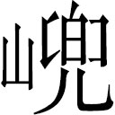

着眼。莫教坑堑陷毗卢。本体常清净，方可论元初。性烛须挑剔，曹溪任吸呼，勿令猿马气声粗。昼夜绵绵息，方显是功夫。着眼。
着眼。莫教坑堑陷毗卢。本体常清净，方可论元初。性烛须挑剔，曹溪任吸呼，勿令猿马气声粗。昼夜绵绵息，方显是功夫。着眼。 猿马气息颇不粗，只恐肝木伐脾土耳。
猿马气息颇不粗，只恐肝木伐脾土耳。李本总批：篇中云：“道高一尺，魔高一丈。”的是名言。若无彼丈魔，亦无此尺道，即所云“沙里淘金”是也。离沙决无有金理，离魔亦决无有道理。
澹漪子曰：三藏之难，山与水相为循环。向者红孩归海，为山之终而水之始；兹者白鼋渡河，又为水之终而山之始矣。按金峡兑怪，与西方诸魔伎俩，亦不甚悬绝，独其袖中一圈，善能套摄诸物，遂致诸天神圣，束手而莫可如何。而根究到底，乃是老君之金刚琢。昔年曾以此制心猿之命，今复以此攫心猿之兵，心猿之受困于此琢，固如是乎？虽然，此牛盗主人之神器，于物无所不套，而主人一至，终不免自套其鼻，然则弄人者适所以自弄耳。与为金

洞之神通，又何如兜率宫之自在也哉？行者画圈作安身法，请三藏稳坐其中，而三藏不听，遂致遇魔。可见吉凶悔吝生乎动，天下事未有以宁静而取祸者也。或曰：三藏虽然出圈，若八戒不贪锦背心，当亦不至遇魔。曰：道与魔不两立。才出道，便已入魔。是三人者才离行者之圈，便已堕兕怪之网矣。纵使无锦背心，彼亡灵之宅前，岂安身养性之地乎？
词曰：
心地频频扫，尘情细细除，着眼。莫教坑堑陷毗卢。本体常清净，方可论元初。性烛须挑剔，曹溪任吸呼，勿令猿马气声粗。昼夜绵绵息，方显是功夫。着眼。猿马气息颇不粗，只恐肝木伐脾土耳。
这一首词，牌名《南柯子》。单道着唐僧脱却通天河寒冰之灾，踏白鼋负登彼岸。四众奔西，正遇严冬之景，但见那林光漠漠烟中淡，山骨棱棱水外清。师徒们正当行处，忽然又遇一山，阻住去道。路窄崖高，石多岭峻，人马难行。三藏在马上兜住缰绳，叫声“徒弟。”时有孙行者引八戒、沙僧近前侍立道：“师父，有何吩咐？”三藏道：“你看那前面山高，只恐有虎狼作怪，妖兽伤人，今番是必仔细！”行者道：“师父放心莫虑，我等兄弟三人，性和意合，归正求真，着眼。使出荡怪降妖之法，怕甚么虎狼妖兽！”三藏闻言，只得放怀前进。到于谷口，促马登崖，抬头观看，好山：
嵯峨矗矗，峦削巍巍。嵯峨矗矗冲霄汉，峦削巍巍碍碧空。怪石乱堆如坐虎，苍松斜挂似飞龙。岭上鸟啼娇韵美，崖前梅放异香浓。涧水潺湲流出冷，巅云黯淡过来凶。又见那飘飘雪，凛凛风，咆哮饿虎吼山中。寒鸦拣树无栖处，野鹿寻窝没定踪。可叹行人难进步，皱眉愁脸把头蒙。
师徒四众，冒雪冲寒，战澌澌，行过那巅峰峻岭，远望见山凹中有楼台高耸，房舍清幽。唐僧马上欣然道：“徒弟啊，这一日又饥又寒，幸得那山凹里有楼台房舍，断乎是庄户人家，庵观寺院；且去化些斋饭，吃了再走。”行者闻言，急睁睛看，只见那壁厢凶云隐隐，恶气纷纷，回首对唐僧道：“师父，那厢不是好处。”三藏道：“见有楼台亭宇，如何不是好处？”行者笑道：“师父啊，你那里知道？西方路上多有妖怪邪魔，善能点化庄宅。不拘甚么楼台房舍，馆阁亭宇，俱能指化了哄人。你知道‘龙生九种’，内有一种名‘蜃’。蜃气放出，就如楼阁浅池。若遇大江昏迷，蜃现此势。倘有鸟鹊飞腾，定来歇翅。那怕你上万论千，尽被他一气吞之。此意害人最重。那壁厢气色凶恶，断不可入。”
三藏道：“既不可入，我却着实饥了。”行者道：“师父果饥，且请下马，就在这平处坐下，待我别处化些斋来你吃。”三藏依言下马。八戒采定缰绳，沙僧放下行李，即去解开包裹，取出钵盂，递与行者。行者接钵盂在手，吩咐沙僧道：“贤弟，却不可前进，好生保护师父稳坐于此，待我化斋回来，再往西去。”沙僧领诺。行者又向三藏道：“师父，这去处少吉多凶，切莫要动身别往。老孙化斋去也。”唐僧道：“不必多言，但要你快去快来。我在这里等你。”行者转身欲行，却又回来道：“师父，我知你没甚坐性，我与你个安身法儿。”此安身法即是安心法。即取金箍棒，幌了一幌，将那平地下周围画了一道圈子，请唐僧坐在中间；着八戒、沙僧侍立左右，把马与行李都放在近身。对唐僧合掌道：“老孙画的这圈，强似那铜墙铁壁。凭他甚么虎豹狼虫，妖魔鬼怪，俱莫敢近。但只不许你们走出圈外，只在中间稳坐，保你无虞；但若出了圈儿，定遭毒手。千万，千万！至嘱，至嘱！”三藏依言，师徒俱端然坐下。
行者才起云头，寻庄化斋，一直南行，忽见那古树参天，乃一村庄舍。按下云头，仔细观看，但只见：
雪欺衰柳，冰结方塘。疏疏修竹摇青，郁郁乔松凝翠。几间茅屋半装银，一座小桥斜砌粉。篱边微吐水仙花，檐下长垂冰冻箸。飒飒寒风送异香，雪漫不见梅开处。
行者随步观看庄景，只听得呀的一声，柴扉响处，走出一个老者，手拖藜杖，头顶羊裘，身穿破衲，足踏蒲鞋，拄着杖，仰身朝天道：“西北风起，明日晴了。”如画。说不了，后边跑出一个哈巴狗儿来，望着行者，汪汪的乱吠。老者却才转过头来，看见行者捧着钵盂，打个问讯道：“老施主，我和尚是东土大唐钦差上西天拜佛求经者。适路过宝方，我师父腹中饥馁，特造尊府募化一斋。”老者闻言，点头顿杖道：“长老，你且休化斋，你走错路了。”行者道：“不错。”老者道：“往西天大路，在那直北下。此间到那里有千里之遥，还不去找大路而行？”行者笑道：“正是直北下。我师父现在大路上端坐，等我化斋哩。”那老者道：“这和尚胡说了。你师父在大路上等你化斋，似这千里之遥，就会走路，也须得六七日；走回去又要六七日，却不饿坏他也？”行者笑道：“不瞒老施主说，我才然离了师父，还不上一盏热茶之时，却就走到此处。如今化了斋，还要趁去作午斋哩。”老者见说，心中害怕道：“这和尚是鬼！是鬼！”急抽身往里就走。行者一把扯住道：“施主那里去？有斋快化些儿。”老者道：“不方便！不方便！别转一家儿罢！”行者道：“你这施主，好不会事！你说我离此有千里之遥，若再转一家，却不又有千里？真是饿杀我师父也。”那老者道：“实不瞒你说，我家老小六七口，才淘了三升米下锅，还未曾煮熟。你且到别处去转转再来。”行者道：“古人云：‘走三家不如坐一家’。我贫僧在此等一等罢。”那老者见缠得紧，恼了，举藜杖就打。行者公然不惧，被他照光头上打了七八下，只当与他拂痒。那老者道：“这是个撞头的和尚！”行者笑道：“老官儿，凭你怎么打，只要记得杖数明白，一杖一升米，慢慢量来。”此头索价太贱。那老者闻言，急丢了藜杖，跑进去把门关了，只嚷：“有鬼！有鬼！”慌得那一家儿战战兢兢，把前后门俱关上。行者见他关了门，心中暗想：“这老贼才说淘米下锅，不知是虚是实。常言道：‘道化贤良释化愚’。名言。且等老孙进去看看。”好大圣，捻着诀，使个隐身遁法，径走入厨中看处，果然那锅里气腾腾的，煮了半锅干饭。就把钵盂往里一挜，满满的挜了一钵盂，即驾云回转不题。
却说唐僧坐在圈子里，等待多时，不见行者回来，欠身怅望道：“这猴子往那里化斋去了！”八戒在旁笑道：“知他往那里耍子去来！化甚么斋，却教我们在此坐牢！”三藏道：“怎么谓之坐牢？”八戒道：“师父，你原来不知。古人划地为牢。他将棍子划了圈儿，强似铁壁铜墙，假如有虎狼妖兽来时，如何挡得他住？只好白白的送与他吃罢子。”三藏道：“悟能，凭你怎么处治？”八戒道：“此间又不藏风，又不避冷，若依老猪，只该顺着路，往西且行。师兄化了斋，驾了云，必然来快，让他赶来。如有斋，吃了再走。如今坐了这一会，老大脚冷！”
三藏闻此言，就是晦气星进宫：遂依呆子，一齐出了圈外。沙僧牵了马，八戒担了担，那长老顺路步行前进。不一时，到了那楼阁之所，原来是坐北向南之家。门外八字粉墙，有一座倒垂莲升斗门楼，都是五色装的。那门儿半开半掩。如此门径，仿佛真真、爱爱、怜怜之家，但此处殊有鬼气。八戒就把马拴在门枕石鼓上，沙僧歇了担子，三藏畏风，坐于门限之上。八戒道：“师父，这所在想是公侯之宅，相辅之家。前门外无人，想必都在里面烘火。你们坐着，让我进去看看。”唐僧道：“仔细耶！莫要冲撞了人家。”呆子道：“我晓得。自从归正禅门，这一向也学了些礼数，不比那村莽之夫也。”
那呆子把钉钯撒在腰里，整一整青锦直裰，斯斯文文，走入门里。只见是三间大厅，帘栊高控，静悄悄全无人迹，也无桌椅家火。鬼气。转过屏门，往里又走，乃是一座穿堂。堂后有一座大楼，楼上窗格半开，隐隐见一顶黄绫帐幔。鬼气逼人。呆子道：“想是有人怕冷，还睡哩。”他也不分内外，拽步走上楼来。用手掀开看时，把呆子唬了一个躘踵。原来那帐里，象牙床上，白媸媸的一堆骸骨，骷髅有巴斗大，腿挺骨有四五尺长。此宅既是兕妖点化，安用此物，想故作幻诡以感人耶！呆子定了性，止不住腮边泪落，对骷髅点头叹云：“你不知是——
那代那朝元帅体，何邦何国大将军。
当时豪杰争强胜，今日凄凉露骨筋。
不见妻儿来侍奉，那逢士卒把香焚？
谩观这等真堪叹，可惜兴王霸业人。”
八戒正才感叹，只见那帐幔后有火光一幌。鬼气。呆子道：“想是有侍奉香火之人在后面哩。”急转步过帐观看，却是穿楼的窗扇透光。那壁厢有一张彩漆的桌子，桌子上乱搭着几件锦绣绵衣。呆子提起来看时，却是三件纳锦背心儿。
他也不管好歹，拿下楼来，出厅房，径到门外道：“师父，这里全没人烟，是一所亡灵之宅。老猪走进里面，直至高楼之上，黄绫帐内，有一堆骸骨。串楼旁有三件纳锦的背心，被我拿来了，也是我们一程儿造化。此时天气寒冷，正当用处。师父，且脱了褊衫，把他且穿在底下，受用受用，免得吃冷。”三藏道：“不可！不可！律云：‘公取窃取皆为盗’。倘或有人知觉，赶上我们，到了当官，断然是一个窃盗之罪。还不送进去与他搭在原处！我们在此避风坐一坐，等悟空来时走路。出家人不要这等爱小。”八戒道：“四顾无人，虽鸡犬亦不知之，但只我们知道，谁人告我？有何证见？就如拾到的一般，那里论甚么公取窃取也！”悟能偷心未尽。三藏道：“你胡做啊！虽是人不知之，天何盖焉！玄帝垂训云：‘暗室亏心，神目如电。’趁早送去还他，莫爱非礼之物。”
那呆子莫想肯听，对唐僧笑道：“师父啊，我自为人，也穿了几件背心，不曾见这等纳锦的。你不穿，且待老猪穿一穿，试试新，晤晤脊背。等师兄来，脱了还他走路。”沙僧道：“既如此说，我也穿一件儿。”两个齐脱了上盖直裰，将背心套上。才紧带子，不知怎么立站不稳，扑的一跌。原来这背心儿赛过绑缚手，霎时间，把他两个背剪手贴心捆了。此背心又不减莫氏三女珍珠汗衫矣。可见贪、痴俱有取缚之道。慌得个三藏跌足报怨，急忙上前来解，那里便解得开？三个人在那里吆喝之声不绝，却早惊动了魔头也。
话说那座楼房果是妖精点化的，终日在此拿人。他在洞里正坐，忽闻得怨恨之声，急出门来看，果见捆住几个人了。妖魔即唤小妖，同到那厢，收了楼台房屋之形，把唐僧搀住，牵了白马，挑了行李，将八戒、沙僧一齐捉到洞里。老妖魔登台高坐，众小妖把唐僧推近台边，跪伏于地。妖魔问道：“你是那方和尚？怎么这般胆大，白日里偷盗我的衣服？”三藏滴泪告曰：“贫僧是东土大唐钦差往西天取经的。因腹中饥馁，着大徒弟去化斋未回，不曾依得他的言语，误撞仙庭避风。不期我这两个徒弟爱小，拿出这衣物。贫僧决不敢坏心，当教送还本处。他不听吾言，要穿此晤晤脊背，不料中了大王机会，把贫僧拿来。万望慈悯，留我残生，求取真经，永注大王恩情，回东土千古传扬也！”那妖魔笑道：“我这里常听得人言：有人吃了唐僧一块肉，发白还黑，齿落更生。幸今日不请自来，还指望饶你哩！你那大徒弟叫做甚么名字？往何方化斋？”八戒闻言，即开口称扬道：“我师兄乃五百年前大闹天宫齐天大圣孙悟空也。”
那妖魔听说是齐天大圣孙悟空，老大有些悚惧，口内不言，心中暗想道：“久闻那厮神通广大，如今不期而会。”教：“小的们，把唐僧捆了；将那两个解下宝贝，换两条绳子，也捆了。且抬在后边，待我拿住他大徒弟，一发刷洗，却好凑笼蒸吃。”众小妖答应一声，把三人一齐捆了，抬在后边。将白马拴在槽头，行李挑在屋里。众妖都磨兵器，准备擒拿行者不题。
却说孙行者自南庄人家摄了一钵盂斋饭，驾云回返旧路；径至山坡平处，按下云头，早已不见唐僧，不知何往。棍划的圈子还在，只是人马都不见了。回看那楼台处所，亦俱无矣，惟见山根怪石。行者心惊道：“不消说了！他们定是遭那毒手也！”急依路看着马蹄，向西而赶。
行有五六里，正在凄怆之际，只闻得北坡外有人言语。看时，乃一个老翁，毡衣苫体，暖帽蒙头，足下踏一双半新半旧的油靴，手持着一根龙头拐棒，后边跟一个年幼的僮仆，折一枝腊梅花，自坡前念歌而走。行者放下钵盂，觌面道个问讯，叫：“老公公，贫僧问讯了。”那老翁即便回礼道：“长老那里来的？”行者道：“我们东土来的，往西天拜佛求经。一行师徒四众。我因师父饥了，特去化斋，教他三众坐在那山坡平处相候。及回来不见，不知往那条路上去了。动问公公，可曾看见？”老者闻言，呵呵冷笑道：“你那三众，可有一个长嘴大耳的么？”行者道：“有！有！有！”——“又有一个晦气色脸的，牵着一匹白马，领着一个白脸的胖和尚么？”行者道：“是！是！是！”老翁道：“你们走错路了。你休寻他，各个顾命去也。”行者道：“那白脸者是我师父，那怪样者是我师弟。我与他共发虔心，要往西天取经，如何不寻他去！”老翁道：“我才然从此过时，看见他错走了路径，闯入妖魔口里去了。”行者道：“烦公公指教指教，是个甚么妖魔，居于何方，我好上门取索他等，往西天去也。”老翁道：“这座山叫做金山，山前有个金洞，那洞中有个独角兕大王。莫非独角鬼王一族。那大王神通广大，威武高强。那三众此回断没命了。你若去寻，只怕连你也难保，不如不去之为愈也。我也不敢阻你，也不敢留你，只凭你心中度量。”
行者再拜称谢道：“多蒙公公指教，我岂有不寻之理！”把这斋饭倒与他，将这空钵盂自家收拾。那老翁放下拐棒，接了钵盂，递与僮仆，现出本象，双双跪下叩头叫：“大圣，小神不敢隐瞒。我们两个就是此山山神、土地，在此候接大圣。这斋饭连钵盂，小神收下，让大圣身轻好施法力。待救唐僧出难，将此斋还奉唐僧，方显得大圣至恭至孝。”行者喝道：“你这毛鬼讨打！既知我到，何不早迎？却又这般藏头露尾，是甚道理？”土地道：“大圣性急，小神不敢造次，恐犯威颜，故此隐象告知。”行者息怒道：“你且记打！好生与我收着钵盂！待我拿那妖精去来！”土地、山神遵领。
这大圣却才束一束虎筋绦，拽起虎皮裙，执着金箍棒，径奔山前，找寻妖洞。转过山崖，只见那乱石磷磷，翠崖边有两扇石门，门外有许多小妖，在那里轮枪舞剑。真个是：
烟云凝瑞，苔藓堆青。崚嶒怪石列，崎岖曲道萦。猿啸鸟啼风景丽，鸾飞凤舞若蓬瀛。向阳几树梅初放，弄暖千竿竹自青。陡崖之下，深涧之中，陡崖之下雪堆粉，深涧之中水结冰。两林松柏千年秀，几簇山茶一样红。
这大圣观看不尽，拽开步径至门前，厉声高叫道：“那小妖，你快进去与你那洞主说，我本是唐朝圣僧徒弟齐天大圣孙悟空。快教他送我师父出来，免教你等丧了性命！”
那伙小妖，急入洞里报道：“大王，前面有一个毛脸勾嘴的和尚，称是齐天大圣孙悟空，来要他师父哩。”那魔王闻得此言，满心欢喜道：“正要他来哩！我自离了本宫，下降尘世，更不曾试试武艺。今日他来，必是个对手。”即命：“小的们取出兵器！”那洞中大小群魔，一个个精神抖擞，即忙抬出一根丈二长的点钢枪，递与老怪。老怪传令，教：“小的们，各要整齐，进前者赏，退后者诛！”众妖得令，随着老怪，腾出门来。叫道：“那个是孙悟空？”行者在旁闪过，见那魔王生得好不凶丑：
独角参差，双眸幌亮。顶上粗皮突，耳根黑肉光。舌长时搅鼻，口阔版牙黄。毛皮青似靛，筋挛硬如钢。比犀难照水，象牯不耕荒。全无喘月犁云用，倒有欺天振地强。两只焦筋蓝靛手，雄威直挺点钢枪。细看这等凶模样，不枉名称兕大王！
孙大圣上前道：“你孙外公在这里也！快早还我师父，两无毁伤！若道半个‘不’字，我教你死无葬身之地！”那魔喝道：“我把你这个大胆泼猴精！你有些甚么手段，敢出这般大言！”行者道：“你这泼物，是也不曾见我老孙的手段！”那妖魔道：“你师父偷盗我的衣服，实是我拿住了，如今待要蒸吃。你是个甚么好汉，就敢上我的门来取讨！”行者道：“我师父乃忠良正直之僧，岂有偷你甚么妖物之理？”妖魔道：“我在山路边点化一座仙庄，你师父潜入里面，心爱情欲，将我三领纳锦绵装背心儿偷穿在身，见有赃证，故此我才拿他。你今果有手段，即与我比势。假若三合敌得我，饶了你师之命；如敌不过我，教你一路归阴！”
行者笑道：“泼物！不须讲口！但说比势，正合老孙之意。走上来，吃吾之棒！”那怪物那怕甚么赌斗，挺钢枪劈面迎来。这一场好杀！你看那：
金箍棒举，长杆枪迎。金箍棒举，亮藿藿似电掣金蛇；长杆枪迎，明幌幌如龙离黑海。那门前小妖擂鼓，排开阵势助威风；这壁厢大圣施功，使出纵横逞本事。他那里一杆枪，精神抖擞；我这里一条棒，武艺高强。正是英雄相遇英雄汉，果然对手才逢对手人。那魔王口喷紫气盘烟雾，这大圣眼放光华结绣云。只为大唐僧有难，两家无义苦争抡。
他两个战经三十合，不分胜负。那魔王见孙悟空棍法齐整，一往一来，全无些破绽，喜得他连声喝采道：“好猴儿！好猴儿！真个是那闹天官的本事！”这大圣也爱他枪法不乱，右遮左挡，甚有解数，也叫道：“好妖精！好妖精！果然是一个偷丹的魔头！”还是一对知己。二人又斗了一二十合。
那魔王把枪尖点地，喝令小妖齐来。那些泼怪，一个个拿刀弄杖，执剑轮枪，把个孙大圣围在中间。行者公然不惧，只叫：“来得好！来得好！正合吾意！”使一条金箍棒，前迎后架，东挡西除。那伙群妖，莫想肯退。行者忍不住焦躁，把金箍棒丢将起去，喝声“变！”即变作千百条铁棒，好便似飞蛇走蟒，盈空里乱落下来。那伙妖精见了，一个个魄散魂飞，抱头缩颈，尽往洞中逃命。老魔王唏唏冷笑道：“那猴不要无礼！看手段！”即忙袖中取出一个亮灼灼白森森的圈子来，望空抛起，叫声“着！”唿喇一下，把金箍棒收做一条，套将去了。弄得孙大圣赤手空拳，翻筋斗逃了性命。那妖魔得胜回归洞，行者朦胧失主张。这正是：何其明显。
道高一尺魔高丈，性乱情昏错认家。
可恨法身无坐位，当时行动念头差。
说出。
毕竟不知这番怎么结果，且听下回分解。
悟元子曰：上回结出金丹大道，须得水中金一味，运火煅炼，可以结胎出胎，而超凡入圣矣。然真者易知，而假者难除，苟不能看破一切，置幻身于度外，则千日为善，善犹不足；一日为恶，恶常有余。纵大道在望，终为邪魔所乱，何济于事？故此回合下一二回，举其最易动心乱性者，提醒学人耳。
冠首《南柯子》一词，叫人心地清净，扫除尘积，抛去世事，绵绵用功，不得少有差迟，方能入于大道。师徒四众，心和意合，归正求真，是以性命为一大事，正当努力前行，轻幻身而保法身之时。奈何唐僧以饥寒之故，使徒弟化斋饭吃了再走，此便是以饥渴之害为心害，而招魔挡路，不能前进之兆。故行者道：“那厢不是好处？”又道：“那厢气色凶恶，断不可入。”言此厢是我，那厢是魔，因饥渴而思斋，则魔即思斋而起。“断不可入”，犹言断不可以饥渴，而情乱起魔也。盖情一乱，性即从之，情乱性从，为物所移，身不由主，便是无坐性。“行者取金箍棒将平地上周围画了一道圈子，请唐僧坐在中间，对唐僧道：‘老孙画的这圈，强似那铜墙铁壁，凭他什么虎狼魔鬼，俱莫敢近，但只不可走出圈外。’”圈者，圆空之物，置身于中，性定情忘，素位而行，不愿乎外，虽虎狼魔鬼，无隙可窥。此安身立命之大法门，随缘度日之真觉路。曰：“千万！千万！”何等叮咛之至！
“行者纵起云头，寻庄化斋。忽见那古树参天，乃一起庄舍，柴扉响处，走出一个老者，手拖藜杖，仰面朝天道：‘西北风起，明日晴了。’说不了，后边跳出一个哈巴狗儿来，望着行者汪汪的乱吠。”此分明写出一个贪图口腹小人形像出来也。吾于何知之？吾于行者寻庄化斋知之。“见古树参天，一起庄舍。”非心中有丰衣足食富贵之见乎？“柴扉响处，走出一个老者，手拖藜杖。”非小家子出身，内有贪图，而外装老成乎？“仰面朝天道：‘西北风起，明日晴了。’”非仰风色而暗生妄想乎？“说不了，后边跑出一个哈巴狗儿来乱吠。”狗者，贪食之物；哈巴者，碎小之物；乱吠者，以小害大之义。总写小人贪图口腹，损人利己，无所不至之象。噫！修道者，若图口食而乱情，与哈巴狗相同，养其小者为小人，尚欲成道，岂可得乎？故老者道：“你且休化斋，你走错路了，还不去找大路而行？”修行者，不以大道为重，因食起念。便是走错道路。身在此，而心在彼；外虽人形，内实是鬼。老者害怕是鬼，岂虚语哉？
“六七口下了三升米”，无非口食之见。“走三家不如坐一家”，当须抱道而亡。“缠得紧，举杖就打”，打不尽世间贪汉。“记杖数，慢慢量来”，活画出教门魔头。“老者嚷有鬼，行者呼老贼”，骂尽一切为口腹而轻性命之徒。妙哉！“行者使隐身法，满满的挜了一钵孟干饭，即驾云回转。”老子云。“吾所以有大患者，为吾有身，乃吾无身，吾有何患？”夫人以饥渴起见者，无非为此身耳。为此身，则身即为大患。使隐身法，置身于无何有之乡，忘物忘形，虽满挜钵盂，而以无心持之，何患之有？彼唐僧阴柔无断，出了行者圈子。坐于公侯之门，弃天爵而要人爵。舍内真而就外假，养小失大，何其愚哉？殊不知人之幻身。乃天地之委物，无常若到，一堆骨髓骷髅而已，有何实济？
“呆子止不住腮边泪落道：‘那代那朝元帅体，何邦何国大将军。英雄豪杰今安在，可惜兴王定霸人。’”一切养小失大之迷徒，可以悟矣。修道者，若看不破幻身之假，遇境迁流。＿逐风扬波。即是呆子进富贵之家，观见锦绣绵衣，暗中动情，拿来三件背心儿，不管好歹矣。
夫好者好心，歹者歹心，因衣食动念，是背好心而生歹心，不管好歹，非背心而何？独是背心一件而已，何至于三？此有说焉。举世之人，醉生梦死，皆为贪、嗔、痴三者所误，故脱不得轮回，出不得苦难。夫不知止足则为贪，懊悔怨尤则为嗔，妄想无已则为痴。此三者名为三毒，又谓三尸，又谓三毛。古人有“除三毒”、“斩三尸”、“伐三毛”之义。学者若不谨慎，一有所着，三件并起，情乱性从，莫知底止，其谓三件背心，不是虚语。三藏道：“公取窃取皆为盗。”言见物起念，虽未得手，而早已留心，与窃盗相同，何能修道？此等之徒，自谓隐微密秘，无人知觉，彼安知暗室亏心，神目如电？故君子戒慎乎其所不睹，恐惧乎其所不闻也。身为心舍，心为身主，背心而身不能自主，立站不稳，扑的一跌，良有以也。
“这背心儿赛过绑缚手，霎时把八戒沙僧背剪手贴心捆了。三藏来解，那里解得开。”此等处，尽是打开后门之法语。盖能存其心，虽身被绑缚，而心可无损；仅借其身，则心有所背，而身迹遭殃。背剪手贴心捆了，还以其人之术制其人。“三藏解不开”，自己受捆，当须自解，而非可外人能解者。唐僧因食而出圈，八戒沙僧因衣而受捆，俱系自作自困，自入魔口，谓之不请自来，恰是妙语。
“唐僧说出西天取经，因腹中饥馁，着大徒弟去化斋，两个徒弟爱小，拿出衣物，要护脊背，不料中了大王机会。”噫！取经何事，而可因饥思斋，因寒爱衣？世之思斋爱衣；而不中金山金洞兕角大王机会者，有几人哉？
“金山”者，土厚而金埋。“独角兕”者，意动而行凶。唐僧八戒为衣食而意乱，致遭魔手，是金峋山独角大王，即唐僧之变相，其魔乃自生之而非外来者。若欲除去此魔，先须除去衣食之见，衣食看轻，而魔渐有可除之机。故土地道；“可将斋饭钵盂，交与小神收下，让大圣身轻，好施法力。”可知心有衣食之见，而法力难施也。既云身轻好施法力，何以行者将金箍律变作千百条盈空乱下，老魔取出圈子，把金箍棒收作一条，套将去乎？夫天下事，惟定者可以制乱，惟少者可以御多。意动无忌，可谓乱矣。一而变千，盈空乱下，是以乱制乱，以多御多，不特不能降魔，而且有以助魔，故逃不得妖精圈子。
其曰：“妖魔得胜回山洞，行者朦胧失主张。”最为妙语。要之主张之失，非行者与妖魔争战时失去，已于唐僧出圈子时失去矣；非于出圈子时失去，早于思想吃斋，一念之动失去矣。给云：“道高一尺魔高丈，性乱情昏错认家。可恨法身无坐位，当时行动念头差。”可谓叫醒一切矣。
诗云：
情乱性从爱欲深，出真入假背良心。
可叹皮相痴迷汉，衣食忙忙苦恼侵。